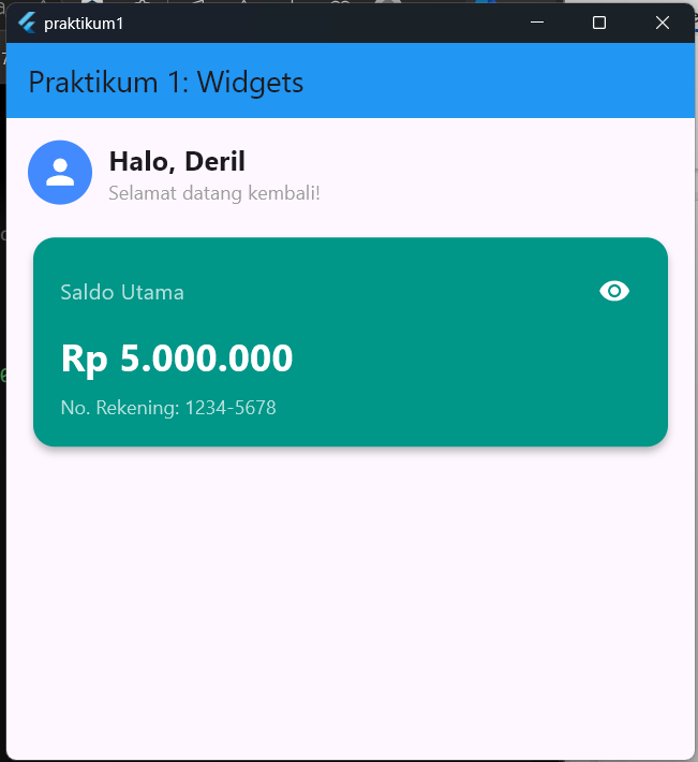
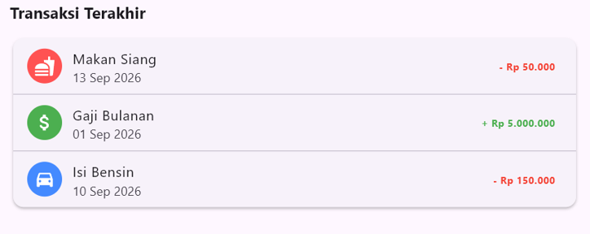
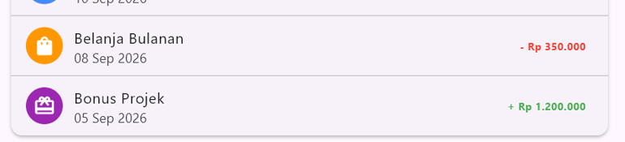
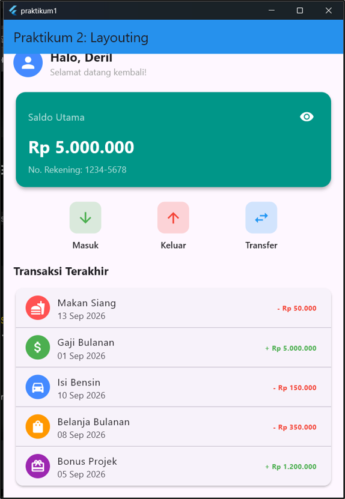

Pengenalan Widgets Stateless, Stateful, Layouting & Styling
Dibuat : September 2026
Repository GitHub
Praktikum ini dilakukan untuk menerapkan konsep Stateless Widget, Stateful Widget,
serta manajemen state dasar dalam pemrograman Flutter, yaitu agar aplikasi dapat
menyusun struktur antarmuka (user interface) secara terstruktur dan merespons
interaksi pengguna secara dinamis. Mempelajari cara mengimplementasikan kerangka
aplikasi MaterialApp dan Scaffold, serta pemanfaatan
fungsi setState() untuk memperbarui tampilan saat terjadi perubahan
data internal.
Studi kasus difokuskan pada pembuatan kartu saldo interaktif dan komponen sapaan pengguna, di mana sistem dapat menyembunyikan (obscure) atau menampilkan nominal saldo serta nomor rekening secara otomatis saat pengguna menekan tombol ikon mata.
MaterialApp &
Scaffold).
StatelessWidget dan StatefulWidget.
setState() untuk UI interaktif.Row untuk deretan tombol aksi.Column untuk daftar transaksi.Container.MaterialApp merupakan widget pembungkus utama (root widget)
yang
menyematkan berbagai konfigurasi global aplikasi, seperti tema warna, judul,
rute navigasi, serta penyembunyian banner debug. Scaffold
adalah
widget yang menyediakan struktur layout dasar, mencakup slot-slot komponen
UI
seperti appBar, body, drawer, dan
floatingActionButton.
StatefulWidget)
yang bertindak sebagai konfigurasi awal, dan kelas State (mewarisi
State<T>) tempat logika aplikasi, variabel internal yang
dapat berubah, dan method build() didefinisikan.
setState() digunakan
untuk memberi tahu framework Flutter bahwa terjadi perubahan data pada objek
State. Ketika dipanggil, Flutter akan menandai widget sebagai dirty
dan secara otomatis mengeksekusi ulang method build() sehingga
UI di-render ulang sesuai nilai variabel terbaru.
Row dan Column merupakan widget tata letak
multifungsi yang menyusun widget-widget anaknya secara horizontal (Row) atau
vertikal (Column). Operator Ternary (condition ? expr1 : expr2)
melakukan pengondisian cepat langsung pada properti widget, misalnya
mengubah
ikon atau teks secara dinamis berdasarkan nilai boolean state yang aktif.
Modul 1
A. Widget Utama
1. Buat file prak1modul1.dart di folder
lib, kemudian buat class widget utama MyApp sebagai
StatelessWidget yang membungkus MaterialApp dengan
konfigurasi global seperti judul, tema warna biru, dan menonaktifkan banner debug.
class MyApp extends StatelessWidget {
const MyApp({super.key});
@override
Widget build(BuildContext context) {
return MaterialApp(
debugShowCheckedModeBanner: false,
title: 'Expense Tracker',
theme: ThemeData(primarySwatch: Colors.blue),
home: const DashboardScreen(), // Halaman awal aplikasi
); // MaterialApp
}
}2. Buat halaman utama menggunakan Scaffold
sebagai kelas StatelessWidget. Scaffold menyediakan
AppBar bertuliskan "Praktikum 1: Widgets" dengan warna biru, dan
body diisi Padding yang memuat Column berisi
tiga widget: GreetingWidget(), SizedBox, dan
BalanceCardWidget().
class DashboardScreen extends StatelessWidget {
const DashboardScreen({super.key});
@override
Widget build(BuildContext context) {
return Scaffold(
appBar: AppBar(
title: const Text('Praktikum 1: Widgets'),
backgroundColor: Colors.blue,
), // AppBar
body: const Padding(
padding: EdgeInsets.all(16.0),
child: Column(
crossAxisAlignment: CrossAxisAlignment.start,
children: [
GreetingWidget(), // Memanggil StatelessWidget
SizedBox(height: 20), // Jarak vertikal
BalanceCardWidget(), // Memanggil StatefulWidget
],
), // Column
), // Padding
); // Scaffold
}
}B. Membuat Widget Sapaan (Stateless)
1. Buat kelas GreetingWidget yang meng-extend
StatelessWidget karena tampilannya tidak akan mengalami perubahan
(statis).
class GreetingWidget extends StatelessWidget {2. Override method build() untuk menimpa
fungsi bawaan parent class dan menyusun layout yang mengembalikan sebuah widget.
Susun elemen dalam sebaris (Row) dengan
mainAxisAlignment: MainAxisAlignment.spaceBetween, lalu tambahkan
Column untuk menampilkan teks sapaan secara vertikal rata kiri, dan
CircleAvatar untuk bingkai ikon profil berbentuk lingkaran.
@override
Widget build(BuildContext context) {
return Row(
mainAxisAlignment: MainAxisAlignment.spaceBetween,
children: [
Column(
crossAxisAlignment: CrossAxisAlignment.start,
children: [Text("Halo, Deril!"), Text("Selamat datang kembali")],
), // Column
CircleAvatar(child: Icon(Icons.person)),
],
); // Row
}
}Kode ini membuat widget (custom) yang bersifat statis, ditampilkan sebagai header halaman "MyApp", berisi teks sapaan dan ikon profil dengan style spaceBetween.
C. Membuat Kartu Saldo (Stateful)
1. Buat kelas BalanceCard yang meng-extend
StatefulWidget untuk tampilan kartu saldo yang dinamis.
createState() merupakan fungsi wajib untuk membuat dan menghubungkan
objek pengelola state (_BalanceCardState).
class BalanceCard extends StatefulWidget {
@override
_BalanceCardState createState() => _BalanceCardState();
}2. Inisialisasi variabel state pada kelas
_BalanceCardState. Variabel _isObscure menyimpan status
sensor (tampil/sembunyi), dan _balance menyimpan nilai nominal saldo.
class _BalanceCardState extends State {
bool _isObscure = false;
final String _balance = "Rp 5.000.000"; 3. Susun tampilan kartu menggunakan widget
Card berlatar biru sebagai efek kartu, dengan Row
berstyle spaceBetween. Widget Text menggunakan Ternary
Operator untuk mengkondisikan tampilan berdasarkan nilai _isObscure:
jika true menampilkan "Rp ********", jika false
menampilkan nilai _balance. IconButton mengubah nilai
_isObscure sekaligus mengubah bentuk ikon secara dinamis menggunakan
visibility_off saat tersensor dan visibility saat
terlihat.
@override
Widget build(BuildContext context) {
return Card(
color: Colors.blueAccent,
child: Row(
mainAxisAlignment: MainAxisAlignment.spaceBetween,
children: [
Text(
_isObscure ? "Rp ********" : _balance, // Logika Ternary sensor teks
), // Text
IconButton(
icon: Icon(_isObscure ? Icons.visibility_off : Icons.visibility),
onPressed: () {
setState(() {
_isObscure = !_isObscure; // Membalik nilai boolean
});
},
), // IconButton
],
), // Row
); // Card
}
}D. Latihan Modul 1
Tugas 1 – Styling: Ubah warna tema
BalanceCard dari biru (Colors.blueAccent) menjadi hijau
emerald (Colors.teal), serta tambahkan elevation dan
shape dengan sudut membulat.
return Card(
elevation: 4,
shape: RoundedRectangleBorder(borderRadius: BorderRadius.circular(16)),
color: Colors.teal,
...Tugas 2 – Modifikasi UI: Tambahkan teks statis "No. Rekening: 1234-5678" di bagian bawah nominal saldo di dalam kartu.
const SizedBox(height: 8),
Text(
_isObscure ? 'Rp 5.000.000' : 'Rp *********',
style: const TextStyle(
fontSize: 28,
fontWeight: FontWeight.bold,
color: Colors.white,
), // TextStyle
), // Text
const SizedBox(height: 8),
const Text(
'No. Rekening: 1234-5678',
style: TextStyle(fontSize: 14, color: Colors.white70),
), // TextOutput: kartu saldo berwarna teal dengan nominal saldo, nomor rekening statis di bawahnya, serta tombol ikon mata yang mengontrol visibilitas saldo secara dinamis.

Modul 2
Melanjutkan kode program di Modul 1.
A. Menyusun Tombol Aksi (Row)
Buat widget class ActionButtonsWidget
bersifat statis. Elemen-elemennya disusun dalam sebaris (Row) dengan
styling spaceEvenly, lalu diisi widget children yang menampilkan
fungsi tombol berupa ikon panah bawah "Masuk", panah atas "Keluar", dan panah
bolak-balik "Transfer".
class ActionButtons extends StatelessWidget {
@override
Widget build(BuildContext context) {
return Row(
mainAxisAlignment: MainAxisAlignment.spaceEvenly,
children: [
_buildButton(Icons.arrow_downward, "Masuk", Colors.green),
_buildButton(Icons.arrow_upward, "Keluar", Colors.red),
_buildButton(Icons.swap_horiz, "Transfer", Colors.blue),
],
);
}
}B. Menyusun Riwayat Daftar Transaksi (Column + ListTile)
Susun daftar transaksi secara vertikal menggunakan
Column dan ListTile. Setiap item transaksi memuat
CircleAvatar sebagai ikon indikator (leading), judul dan tanggal
(title & subtitle), serta nominal transaksi (trailing) yang diberi warna
kondisional: merah untuk pengeluaran dan hijau untuk pemasukan.
// Item Transaksi 1 – Pengeluaran
ListTile(
leading: const CircleAvatar(
backgroundColor: Colors.redAccent,
child: Icon(Icons.fastfood, color: Colors.white),
), // CircleAvatar
title: const Text('Makan Siang'),
subtitle: const Text('13 Sep 2026'),
trailing: const Text(
'- Rp 50.000',
style: TextStyle(color: Colors.red, fontWeight: FontWeight.bold),
), // Text
), // ListTile
const Divider(height: 1),
// Item Transaksi 2 – Pemasukan
ListTile(
leading: const CircleAvatar(
backgroundColor: Colors.green,
child: Icon(Icons.attach_money, color: Colors.white),
), // CircleAvatar
title: const Text('Gaji Bulanan'),
subtitle: const Text('01 Sep 2026'),
trailing: const Text(
'+ Rp 5.000.000',
style: TextStyle(color: Colors.green, fontWeight: FontWeight.bold),
), // Text
), // ListTileC. Integrasi Dashboard (Scrollable)
Gabungkan seluruh widget ke dalam
SingleChildScrollView pada body Scaffold agar konten
dapat digulir dan tidak mengalami overflow saat layar memanjang.
body: const SingleChildScrollView(
child: Padding(
padding: EdgeInsets.all(16.0),
child: Column(
crossAxisAlignment: CrossAxisAlignment.start,
children: [
GreetingWidget(), // Dari Modul 1
SizedBox(height: 20),
BalanceCardWidget(), // Dari Modul 1
SizedBox(height: 20),
ActionButtonsWidget(), // Widget baru Modul 2
SizedBox(height: 20),
RecentTransactionsWidget(), // Widget baru Modul 2
],
), // Column
), // Padding
), // SingleChildScrollViewD. Latihan Modul 2
Tugas 1 – Styling: Pada widget Daftar
Transaksi (ListTile), ubah warna trailing text pengeluaran menjadi
merah dan text pemasukan menjadi hijau.
// Pengeluaran – trailing merah
trailing: const Text(
'- Rp 50.000',
style: TextStyle(color: Colors.red, fontWeight: FontWeight.bold),
),
// Pemasukan – trailing hijau
trailing: const Text(
'+ Rp 5.000.000',
style: TextStyle(color: Colors.green, fontWeight: FontWeight.bold),
),Output:

Tugas 2 – Tambah Data: Tambahkan 2 transaksi fiktif baru ke dalam daftar "Transaksi Terakhir" di bawah kode yang sudah ada.
// Transaksi Fiktif 1 – Pengeluaran Belanja Bulanan
const ListTile(
leading: CircleAvatar(
backgroundColor: Colors.orange,
child: Icon(Icons.shopping_bag, color: Colors.white),
), // CircleAvatar
title: Text('Belanja Bulanan'),
subtitle: Text('08 Sep 2026'),
trailing: Text(
'- Rp 350.000',
style: TextStyle(color: Colors.red, fontWeight: FontWeight.bold),
), // Text
), // ListTile
const Divider(height: 1),
// Transaksi Fiktif 2 – Pemasukan Bonus Projek
const ListTile(
leading: CircleAvatar(
backgroundColor: Colors.purple,
child: Icon(Icons.card_giftcard, color: Colors.white),
), // CircleAvatar
title: Text('Bonus Projek'),
subtitle: Text('05 Sep 2026'),
trailing: Text(
'+ Rp 1.200.000',
style: TextStyle(color: Colors.green, fontWeight: FontWeight.bold),
), // Text
), // ListTileOutput:

Penggabungan GreetingWidget (Stateless) dan BalanceCard
(Stateful) bersama ActionButtonsWidget dan
RecentTransactionsWidget ke dalam Scaffold utama yang dapat digulir.

Dari hasil praktikum ini, berhasil dibangun UI aplikasi menggunakan berbagai widget penataan tata letak (layouting) dan styling pada Flutter.
ActionButtonsWidget, sedangkan Column dan ListTile
menyusun daftar transaksi secara vertikal dengan struktur yang rapi._buildActionButton: Memungkinkan
pembuatan widget dilakukan secara efisien tanpa pengulangan kode (modularitas).Integrasi antara widget dasar layouting, pemisahan komponen statis/dinamis, serta penanganan debugging sintaks mampu menghasilkan antarmuka aplikasi yang responsif, terstruktur, dan stabil.